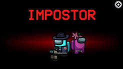
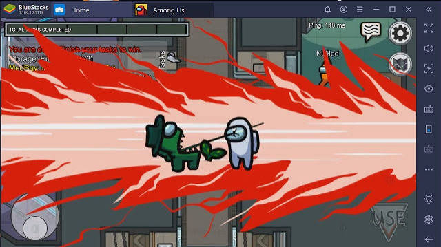

1. Fisiología, Origen y Naturaleza del Parásito Infiltrado
El Impostor no es un tripulante amotinado ni un criminal convencional con motivación ideológica; se trata de una entidad biológica parasitaria de origen extraterrestre interceptada durante exploraciones científicas profundas en las tundras del planeta Polus. Esta forma de vida inteligente posee la escalofriante capacidad celular de copiar la anatomía exterior, los patrones de marcha, los gestos faciales y las insignias de vestimenta de cualquier ser humano con el que entre en contacto, ocultando una mandíbula con dientes afilados y una lengua ósea retráctil perforadora.
Su propósito biológico irrevocable es el exterminio metódico de todos los miembros de la tripulación antes de que la astronave alcance una base habitada, evitando así que la civilización humana desarrolle defensas inmunológicas contra su especie. Para conseguirlo, el Impostor combina el combate cuerpo a cuerpo sigiloso con una comprensión instintiva de los sistemas de soporte vital, permitiéndole provocar sabotajes críticos en los reactores nucleares, apagar las luces eléctricas o sellar compuertas neumáticas para aislar a sus presas.
En el plano táctico, el Impostor dispone de ventajas sensoriales sustanciales: su visión nocturna es inmune a los apagones de energía y posee acceso ilimitado a las rejillas de ventilación. Su mayor destreza, sin embargo, debe manifestarse en el debate democrático: el verdadero asesino maestro es aquel capaz de fingir inocencia, participar en el dolor colectivo y desviar las sospechas hacia tripulantes honestos para que la asamblea ejecute el trabajo sucio por él.
2. Análisis de Mecánicas, Sabotajes y Kill Cooldown
El arsenal del Impostor clásico es el más balanceado y versátil de toda la tripulación hostil:
2.1. Asesinato Furtivo (Kill) [Letal Cuerpo a Cuerpo]
Ejecuta a un tripulante cercano de un solo golpe, partiendo el cuerpo y dejando restos óseos que pueden ser reportados por cualquiera. Esta capacidad ejerce un impacto directo sobre la dinámica de supervivencia en la nave (Tiempo de Recarga (CD): 10s a 45s (Configurable)), obligando tanto a aliados como a adversarios a recalcular constantemente sus rutas de tránsito y tiempos de reacción.
2.2. Sabotaje Crítico [Amenaza Global]
Interviene el reactor, despresuriza el oxígeno o corta las luces de la nave. Si el temporizador de emergencia expira, gana la partida de forma automática. Esta capacidad ejerce un impacto directo sobre la dinámica de supervivencia en la nave (Cuenta Regresiva: 30s a 60s Victoria), obligando tanto a aliados como a adversarios a recalcular constantemente sus rutas de tránsito y tiempos de reacción.
2.3. Red de Ventilación Ilimitada [Movilidad Furtiva]
A diferencia del Ingeniero, el Impostor puede permanecer dentro de los ductos por tiempo indefinido, emboscando a cualquier explorador descuidado. Esta capacidad ejerce un impacto directo sobre la dinámica de supervivencia en la nave (Permanencia en Ducto: Ilimitada), obligando tanto a aliados como a adversarios a recalcular constantemente sus rutas de tránsito y tiempos de reacción.
3. Ventajas Estratégicas y Puntos Vulnerables
3.1. Ventajas Operativas y Fortalezas Estratégicas
El despliegue eficiente de este rol aporta ventajas sustanciales que permiten maximizar el control del mapa y acelerar los objetivos del equipo:
3.2. Vulnerabilidades Críticas y Limitaciones Operativas
No obstante, el operador se encuentra sujeto a vulnerabilidades severas que los adversarios procurarán capitalizar en los momentos de mayor tensión:
- Punto vulnerable: Extrema inferioridad numérica: habitualmente 1 o 2 impostores contra 8 a 13 inocentes.
- Punto vulnerable: Incapaz de reproducir tareas visuales que comprueben inocencia de forma empírica.
- Punto vulnerable: Riesgo constante de ser visto saliendo de un ducto o interceptado por un Detective.
- Punto vulnerable: Vulnerable al veredicto unilateral del Juez si genera sospechas evidentes.
4. Estrategia Avanzada y Sociometría del Debate
4.1. El Asesinato en Pila (Stack Kill)
Cuando las luces están saboteadas y cuatro o cinco tripulantes se agrupan en el mismo píxel para reparar el panel de fusibles, sitúate en el centro y pulsa "Kill". Al estar todos superpuestos en un mismo punto, resulta virtualmente imposible identificar quién asestó el golpe.
4.2. El Sabotaje Cruzado
Si ejecutas a un tripulante en la esquina este del mapa (Navegación o Escudos), activa de inmediato el sabotaje del Reactor en el extremo opuesto. Toda la tripulación correrá en estampida hacia el otro lado de la nave, dejando el cadáver abandonado por casi un minuto completo.
5. Perfil Operativo y Parámetros Técnicos
Desde la perspectiva de diseño lúdico y balance de juego estandarizado, este personaje se caracteriza por los siguientes parámetros oficiales normados:
- Facción: Impostores.
- Tipo de Rol: Sabotaje & Exterminio.
- Visión Nocturna: 1.5x a 2.0x (Superior).
- Acceso a Ductos: Ilimitado.
- Kill Cooldown: 10s a 45s.
- Condición Victoria: Paridad Numérica / Reactor.
- Dificultad: Media / Estratégica.
6. Recursos Multimedia Obligatorios: Sonido y Vídeo
Efecto de Asesinato / Kill Sound
Sonido característico del impacto letal y la caída de la víctima.
Vídeo Demostrativo del Impostor
Secuencia de sabotaje de luces, emboscada en ductos y huida limpia.
7. Archivos Gráficos y Evidencias Visuales

